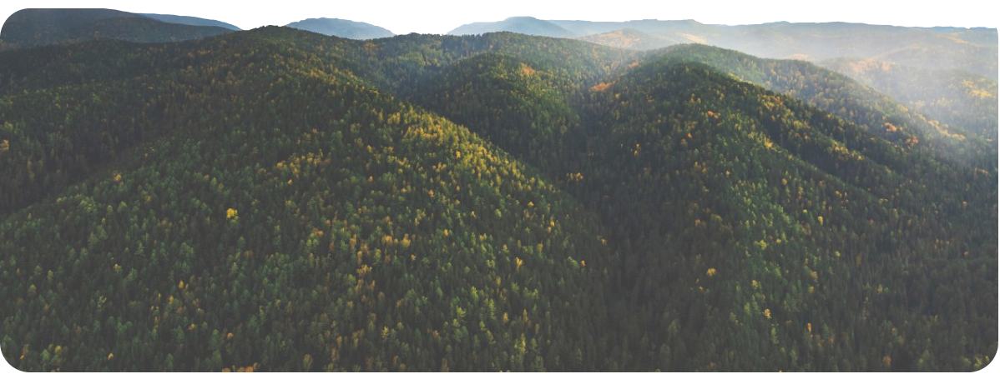

<section class="constructor-modal" id="modal">
    <div class="modal-window">
        
    <div class="modal-head">
        
        <div class="modal-status">
            <span class="step"></span>
        </div>
        <button class="modal-close" id="closeModal">
            &times;
        </button>
    </div>
    <div class="modal-content active">
        <h2>Не знаете куда отправиться?</h2>
        <h1>Откройте Красноярск по-новому</h1>
        <a href="#" class="modal-btn" id="BtnModal">
        Начать подбор
        </a>
        <p>Ответьте всего <br> на несколько вопросов, и мы подберём <br>места, которые подойдут именно Вам</p>
    </div>
    <div class="modal-test">
        <h2></h2>
        <h1></h1>
        <div class="answers">
        </div>
        <div class="modal-arrows">
                <button class="modal-prev">&larr;</button>
                <button class="modal-next">&rarr;</button> 
            </div>
    </div>
    <div class="result">
        <h1>Мы нашли места, которые Вам подойдут</h1>
        <h2>На основе Ваших ответов мы подобрали <br> локации с подходящим форматом отдыха</h2>
        <div class="modal-cards">
    </div>
    <button class="result-back">
        &larr;
    </button>
    </div>
    </div>
</section>